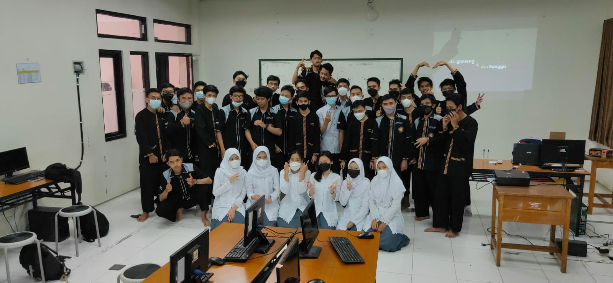

2
Desember 2021
BASDAT Bareng Kang Rifki
Pada semester awal kelas 11 (semester 3) pelajaran basis data rpl 1 diajar oleh mahasiswa UPI namanya Kang Rifki. Banyak materi yang diberikan walaupun masih kurang saat pemaparan materi. Meskipun begitu materi yang didapatkan lebih baik daripada semseter selanjutnya (SIUUUUUUUU)